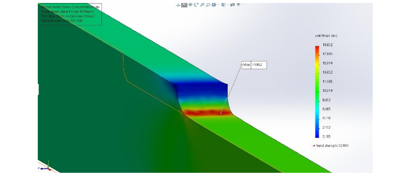
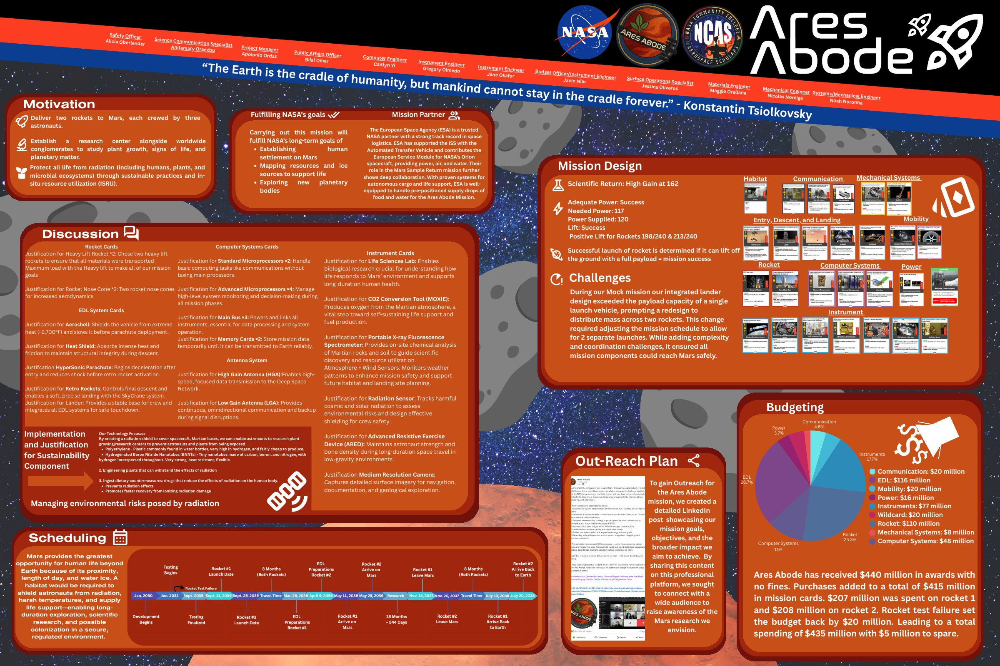

Project—01Finite Element Analysis Studies
Validated simulation models against hand calculations, mesh convergence, and corrected boundary conditions.
Read case study
ME // 2027 · Cal Poly San Luis Obispo
Mechanical engineering student working where CAD, analysis, and hands-on manufacturing meet—from Baja SAE suspension hardware to rapid prototypes for Vandenberg Space Force Base.
Profile
California Polytechnic State University
Degree
B.S. Mechanical EngineeringExpected December 2027 · San Luis Obispo, CA
Looking for
Looking for workMechanical design, manufacturing, R&D
Based in
San Luis Obispo, California
01 / Selected work
Projects are shown as case studies: the constraint, the engineering work, and what the result taught me.

Project—01Validated simulation models against hand calculations, mesh convergence, and corrected boundary conditions.
Read case study Project—02
Project—02
Moved from user needs and CAD through structural analysis, fabrication, and load testing.
View project Project—03
Project—03
Designed and tested a wheeled system for transporting and inverting a five-gallon water bottle.
View project
Project—04Led a multidisciplinary team through planning and execution of a simulated Mars mission.
View project Project—05
Project—05
Validated two experimental methods on known geometry, then measured roll and yaw inertia for a B-2 model.
Read case study Project—06
Project—06
Developed the CAD assembly and motion study for a coordinated automated filling process.
View projectMapped surface pressure and wake velocity, then compared two independent estimates of cylinder drag.
Read case study Project—08
Project—08
Measured the pressure gradient and energy loss through an instrumented rectangular duct bend.
Read case study Project—09
Project—09
Mapped two velocity profiles to track boundary-layer growth, transition, and momentum-based drag.
Read case study Project—10
Project—10
Identified choked flow from pressure ratio and mass-flow data, then reconciled a sensor-location anomaly.
Read case study02 / Experience
Vandenberg Space Force Base
Cal Poly Racing · Baja SAE
Fresno City College Tutorial Center
Madera Unified School District
03 / Capabilities
Tools are only useful when they produce better decisions.
My workflow moves from problem definition to CAD, analysis, drawings, and physical validation.
SolidWorks · Fusion 360 · assemblies · engineering drawings · GD&T
SolidWorks Simulation · FEA validation · EES · mechanics · design tradeoffs
Manual mill · lathe · prototyping · fabrication · design for manufacturing
Technical documentation · tutoring · team leadership · design reviews
04 / Contact